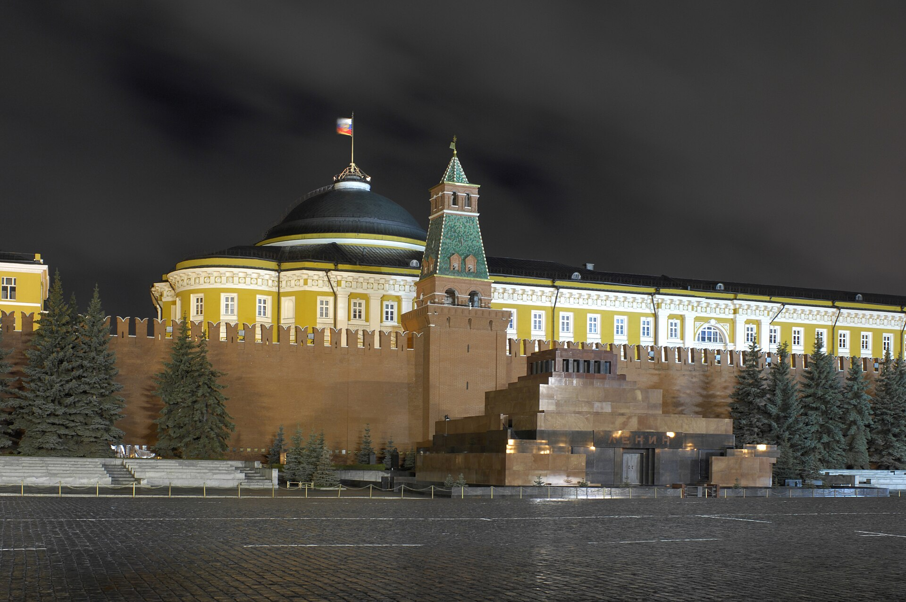

Уиткофф и Кушнер провели в Москве трёхчасовые переговоры с Путиным
5 сентября специальные представители США обсудили предложение Трампа. После встречи об официальном прорыве не объявлялось; Кремль назвал беседу «конструктивной».

5 сентября 2026 года специальные представители президента США Стив Уиткофф и Джаред Кушнер встретились в Москве с президентом России Владимиром Путиным. Переговоры продолжались более трёх часов и завершились без объявления каких-либо официальных договорённостей.
Советник Кремля Юрий Ушаков охарактеризовал беседу как «содержательную, очень откровенную и конструктивную» и сообщил, что был обсуждён «ряд идей» по мирному соглашению.
Визит в Киев
После встречи в Москве американские представители направились в Киев. Их самолёт приземлился в Польше, и делегация добралась до украинской столицы наземным путём 6 сентября. Встреча президента Владимира Зеленского с ними была запланирована на тот же день.
Это стал первый визит специальных представителей в Киев после возвращения Дональда Трампа на пост президента на второй срок.
Временное ограничение
Для облегчения переговоров стороны достигли договорённости ограниченного срока: Россия сообщила, что в течение трёх дней не будет наносить удары по Киеву, а Украина — что до понедельника не будет атаковать Москву.
Позиции сторон
Путин повторил, что Россия достигнет своих военных целей и что необходимо устранить «коренные причины» конфликта. Он охарактеризовал ситуацию как «безусловно, непростую».
Трамп, в свою очередь, заявил, что представители везут «предложение о завершении войны». Украинская сторона ранее сообщала, что передала Вашингтону новые предложения; они включают три элемента — прекращение огня, создание свободной экономической зоны и гарантии безопасности с участием Европейского союза и НАТО.
- Встреча в Москве: 5 сентября, более 3 часов
- Прибытие в Киев: 6 сентября
- Представители США: Стив Уиткофф, Джаред Кушнер
- Временное ограничение: 3 дня без ударов по Киеву, до понедельника — по Москве
Чем это важно для Центральной Азии
Война в Украине влияет на экономику Центральной Азии по нескольким каналам. Первый — миграция и денежные переводы: положение на российском рынке напрямую связано с доходами трудовых мигрантов из региона.
Второй — транспорт. Более 80 процентов нефтяного экспорта Казахстана идёт через Каспийский трубопроводный консорциум (КТК) на терминал в Новороссийске; в течение 2026 года погрузка несколько раз останавливалась из-за атак беспилотников на терминал и танкеры, в том числе 8 сентября.
Третий — альтернативные коридоры. Перевозки по Транскаспийскому маршруту («Среднему коридору») в январе — августе 2026 года выросли на 22 процента.
Дипломатический фон
В течение 2026 года прошло несколько раундов переговоров, в том числе в апреле и мае объявлялись временные ограничения. Однако договорённости о постоянном прекращении огня достигнуто не было.
8 сентября была совершена массированная атака на Киев: по официальным данным, погибли 5 человек, противовоздушная оборона сбила 142 беспилотника и 31 ракету. Это усилило неопределённость относительно длительности и результата переговоров.
Осторожная оценка
Формат специальных представителей
Стив Уиткофф и Джаред Кушнер в качестве специальных представителей президента США участвовали в переговорах по ряду международных направлений. Такой формат позволяет установить прямой контакт вне официальных дипломатических каналов.
Специальные представители обычно обладают широкими полномочиями, однако достигнутые ими договорённости всё равно требуют официального утверждения.
На встрече в Москве со стороны Кремля участвовал помощник президента по внешней политике Юрий Ушаков, и именно он сообщил о результатах беседы.
История переговоров
В течение 2026 года по Украине прошло несколько раундов переговоров. В апреле и мае объявлялось временное прекращение огня, однако оно продержалось недолго.
В марте в штате Флорида прошли переговоры между делегациями США и Украины; в феврале президент Украины говорил о цели завершить соглашение к июню.
В предложениях, переданных украинской стороной Вашингтону, указаны три элемента: прекращение огня, создание свободной экономической зоны и гарантии безопасности с участием Европейского союза и НАТО.
Что означает временное ограничение
Объявленное в ходе переговоров ограничение — отказ России от ударов по Киеву в течение трёх дней и Украины от ударов по Москве до понедельника — не является полным перемирием, а считается ограниченной договорённостью.
Такие ограничения обычно применяются для обеспечения безопасности делегаций и создания переговорной атмосферы. К действиям на линии фронта они не относятся.
8 сентября была совершена массированная атака на Киев: по официальным данным, погибли 5 человек, противовоздушная оборона сбила 142 беспилотника и 31 ракету.
Экономическое влияние на Центральную Азию
Война в Украине влияет на экономику региона по нескольким каналам. Первый — трудовая миграция: положение на российском рынке напрямую связано с доходами работников из региона.
В первом полугодии 2026 года въезд граждан Узбекистана, Таджикистана и Кыргызстана в Россию с целью работы сократился на 15 процентов. А с 25 августа по 5 сентября на родину вернулись 96 415 узбекистанцев.
Второй канал — транспорт. Более 80 процентов нефтяного экспорта Казахстана идёт через Каспийский трубопроводный консорциум на терминал в Новороссийске; в течение 2026 года погрузка несколько раз останавливалась из-за атак беспилотников на терминал и танкеры, в том числе 8 сентября.
Третий канал — альтернативные маршруты. Перевозки по Транскаспийскому направлению в январе — августе 2026 года выросли на 22 процента, а транзит Восток — Запад увеличился на 55 процентов.
Позиция государств региона
Государства Центральной Азии сохраняют в конфликте позицию нейтралитета. Продолжая экономические связи и связи в сфере безопасности с Россией, они расширяют и сотрудничество с Западом.
В сентябре 2026 года этот двусторонний подход проявился в нескольких событиях: 1 сентября в Бишкеке завершился саммит ШОС, 12 сентября президент Казахстана встретился на полях саммита БРИКС со спецпредставителем США, а 13–16 сентября президент Узбекистана совершил государственный визит в Южную Корею.
Оценка результатов
Наблюдатели отметили символическое значение визита, заняв при этом осторожную позицию относительно появления конкретных результатов. Полное содержание переговоров и текст предложения официально не обнародованы.
Российская сторона повторяет, что достигнет своих военных целей и что необходимо устранить «коренные причины» конфликта, — такие формулировки обычно означают более широкие политические требования.
Встреча в Киеве
Самолёт американских представителей приземлился в Польше, и делегация добралась до Киева наземным путём. Воздушное пространство Украины остаётся закрытым для гражданской авиации с начала войны.
Поэтому иностранные делегации обычно добираются поездом или автомобилем через Польшу или Молдову. Такая поездка обычно занимает более десяти часов.
Общественные ожидания
Наблюдатели в Украине оценили визит как важный шаг, результат которого, однако, заранее не был очевиден. Аналитики отмечали, что российская сторона считает себя обладающей военным преимуществом и потому её готовность к компромиссу ограничена.
График дальнейших этапов и встреч переговорного процесса официально не объявлялся.
Наблюдатели отметили символическое значение визита, заняв при этом осторожную позицию относительно появления конкретных результатов. Полное содержание переговоров и текст предложения официально не обнародованы.